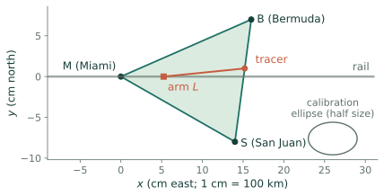
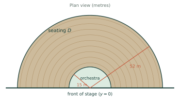

Orient boundaries positively, including boundaries of regions with holes
Verify Green’s theorem edge by edge, and use it to avoid hard line integrals
Find areas and centroids from boundary data (ellipses, polygons, planimeters)
Excise a small circle around a singularity, and decide when a circulation is zero
Review sphere symmetry for surface integrals and flux (Quiz 3)
\(\oint_{\partial D}P\,dx+Q\,dy=\iint_D\Big(\dfrac{\partial Q}{\partial x}-\dfrac{\partial P}{\partial y}\Big)dA\), \(\partial D\) positively oriented (region on the left), \(P,Q\) continuously differentiable on an open set containing \(D\)
Area, with \(\partial D\) positively oriented: \(A=\oint_{\partial D}x\,dy=-\oint_{\partial D}y\,dx=\tfrac12\oint_{\partial D}x\,dy-y\,dx\)
Flux form, with \(\mathbf n\) the outward unit normal: \(\oint_{\partial D}\mathbf F\cdot\mathbf n\,ds=\oint_{\partial D}F_1\,dy-F_2\,dx=\iint_D\Big(\dfrac{\partial F_1}{\partial x}+\dfrac{\partial F_2}{\partial y}\Big)dA\)
Entering answers
Type numbers or formulas: fractions, decimals, pi, e, sqrt(...), sin(...), cos(...), exp(...), log(...). Use ^ for powers and radians for angles; separate vector components with commas.
Any equivalent form is accepted: 3/2, 1.5, and 6/4 are all the same answer, and so are (4/3)pi r^3 and 4 pi r^3/3.
Decimals must be correct to two decimal places (answers smaller than 0.1 need two significant digits). Exact forms such as 6pi sqrt(37) are always fine.
LaTeX such as \frac{1}{2}, \sqrt{2}, \pi, and \phi also works. A potential function may differ from ours by a constant. Units are shown beside each box.
Hints and solutions are built into the page, and nothing you type is sent anywhere: your answers and notes stay in this browser. This is an ungraded practice site.
A 1964 magazine article drew a “Bermuda Triangle” between Miami, Bermuda, and San Juan and blamed it for vanished ships and planes. NOAA finds no evidence that disappearances happen there more often than anywhere else, but the triangle still makes a good test shape. Before computers, chart-makers measured areas with a planimeter: an instrument with an arm whose tracer point you run once around a boundary while a small wheel rolls along the paper. The wheel’s roll gives the area. Mapping software today does the same job from boundary coordinates alone. How can one trip around the edge tell you the area inside, and where the region’s center is?
Building the model
1From the real world
NOAA stations: Virginia Key (Miami) \(25.73^\circ\) N \(80.16^\circ\) W; Bermuda \(32.37^\circ\) N \(64.70^\circ\) W; San Juan \(18.46^\circ\) N \(66.12^\circ\) W
The chart is flat: distances east and north in km, measured at latitude \(25.5^\circ\) N and drawn at 1 cm \(=100\) km
Each vertex is rounded to the nearest 100 km (1 cm on the chart)
The planimeter is an idealized linear one: the foot of the arm (length \(L=10\) cm) slides along a rail on the \(x\)-axis, and the wheel at the tracer rolls only by the tracer’s motion perpendicular to the arm
3So the model is
Chart coordinates in cm, \(x\) east and \(y\) north, Miami at the origin. Triangle \(T\): M \(=(0,0)\), S \(=(14,-8)\), B \(=(16,7)\)
Wheel roll (cm) when the tracer goes once around a loop \(C\): \(\dfrac1L\oint_C-y\,dx+\sqrt{L^2-y^2}\,dy\)
Calibration ellipse: \(x=6\cos t\), \(y=4\sin t\) cm, \(0\le t\le2\pi\)

The chart model (1 cm \(=100\) km): the triangle \(T\) and the idealized planimeter. The foot of the arm (length \(L\)) slides along the rail \(y=0\), and the wheel at the tracer rolls by the tracer’s motion perpendicular to the arm. The calibration ellipse is drawn at half size.
First, on paper
Orient \(\partial T\) positively (in which order are M, S, B visited?) and parametrize each edge for \(0\le t\le1\).
Before (b): Check the hypotheses of Green’s theorem for the planimeter field, and explain why \(|y|<L\) must hold on the whole region.
Before (b): Show that the wheel roll is \(A/L\) for any traced region, and say what the wheel shows if traced clockwise.
After (c): Check (c) with \(\iint_T2x\,dA\), then find \(\bar x=\frac1{2A}\oint_{\partial T}x^2\,dy\) and mark the centroid.
Review: Compute \(\int x\,ds\) along the Miami–San Juan edge.
Whiteboard kit ↓An image with the diagram, model, this task, and blank work areas. Add it to your group’s shared whiteboard as a background.
aBefore tracing the triangle, an operator checks (calibrates) the planimeter on a shape whose area is known exactly. Use \(A=\tfrac12\oint x\,dy-y\,dx\) to find the area of the calibration ellipse \(x=6\cos t\), \(y=4\sin t\) (in cm), \(0\le t\le2\pi\).
A step in the right direction
bUsing the planimeter model with \(L=10\) cm, find the wheel roll when the tracer goes once counterclockwise around the triangle \(T\).
A step in the right direction
cWith \(\partial T\) positively oriented, compute \(\oint_{\partial T}x^2\,dy\) edge by edge, in chart units (cm).
A step in the right direction
View full solution +
Follow the reasoning
Orientation and area: The counterclockwise order is M \(\to\) S \(\to\) B \(\to\) M, because \((14,-8)\times(16,7)=14\cdot7+8\cdot16=226>0\). So the area of \(T\) is \(A=\tfrac12(226)=113\) cm2.
Hypotheses: Green’s theorem needs a positively oriented, piecewise-smooth simple closed boundary, and \(P,Q\) continuously differentiable on an open set containing the region. Here \(P=-y/L\) and \(Q=\sqrt{L^2-y^2}/L\). At \(|y|=L\) the derivative \(Q_y\) blows up, and beyond it \(Q\) is undefined (the arm cannot reach that far from the rail), so we need \(|y|<L\). With \(L=10\) cm and \(-8\le y\le7\) on \(T\), the hypotheses hold.
Wheel roll (b): Green’s theorem gives roll \(=\iint_T(0+\tfrac1L)\,dA=A/L=113/10=11.3\) cm, and the same argument gives \(A/L\) for any region the tracer can reach. The awkward \(\sqrt{L^2-y^2}\,dy\) term never needs integrating. On the calibration ellipse the wheel should roll \(24\pi/10\approx7.54\) cm, which is how the operator checks the instrument. Tracing clockwise reverses the boundary, so the wheel reads \(-11.3\) cm.
Edge by edge (c): \(\int_0^1(14t)^2(-8)\,dt=-\tfrac{1568}3\), then \(\int_0^1(14+2t)^2(15)\,dt=15(196+28+\tfrac43)=3380\), and \(\int_0^1(16-16t)^2(-7)\,dt=-\tfrac{1792}3\). The total is \(3380-1120=2260\) cm3.
Double-integral check and centroid: With \(P=0\) and \(Q=x^2\), Green’s theorem gives \(\oint_{\partial T}x^2\,dy=\iint_T2x\,dA=2A\bar x\), so \(\bar x=2260/226=10\) cm. This matches the average of the vertices’ \(x\)-coordinates, \((0+14+16)/3=10\), which is the centroid of any triangle. Similarly \(\bar y=(0-8+7)/3=-\tfrac13\) cm.
Review: On M to S, \(\mathbf c(t)=(14t,-8t)\) has speed \(\sqrt{260}\), so \(\int x\,ds=\int_0^1 14t\sqrt{260}\,dt=7\sqrt{260}\approx112.9\) cm2.
On the map: \(113\) cm2 on the chart is \(1.13\) million km2. The spherical triangle through the three stations has about \(1.15\) million km2, so the flat chart loses little. The centroid \((10,-\tfrac13)\) cm is about 1,000 km east of Miami, in open ocean north of Hispaniola.
Final answers
a.\(24 \pi\) cm2
b.\(11.3\) cm
c.\(2260\) cm3
Discussion
The range shows that the “Triangle” has no agreed boundary: its area depends on which vertices a writer picks, so it is a story, not a measurement. Before believing a claim of danger you would need a fixed boundary, a count of incidents, and the amount of shipping and air traffic inside it, compared with other busy regions. NOAA finds no evidence that disappearances there are more frequent than elsewhere.
Think it through
Writers have given the Triangle areas from 1.3 to 3.9 million km². What does that range tell you, and what would you need before trusting a claim that the region is unusually dangerous?
Saved on this browser · Discussion prompt, not automatically graded
The Roman theatre at Orange, in southern France, still has its stone seating: a half-ring of rows wrapped around the orchestra, the semicircular floor in front of the stage. How much seating area is there, and how far from the front of the stage does the average spectator sit? A surveyor’s software answers both questions using only the boundary of the seating, and you will do the same with Green’s theorem.
In plan view the seating is a flat, exact half-ring, with radii rounded to \(15\) m and \(52\) m
The front of the stage is the line \(y=0\) through the center of the orchestra
Aisles and stairs are ignored, and spectators fill the seating area evenly
3So the model is
\(D\): \(15\le r\le52\), \(0\le\theta\le\pi\) (meters), in polar coordinates centered on the orchestra
Area \(A=\tfrac12\oint_{\partial D}x\,dy-y\,dx\); first moment \(M=-\tfrac12\oint_{\partial D}y^2\,dx\); \(\bar y=M/A\)

Plan view of the model seating \(D\) (\(15\le r\le52\) m, \(0\le\theta\le\pi\)), with the front of the stage along \(y=0\) and the orchestra inside the inner arc.
First, on paper
Sketch \(D\), mark its four boundary pieces, and orient each so that \(D\) stays on the left. Explain why the inner arc runs clockwise.
Before (a): Use Green’s theorem to turn the area and first-moment boundary integrals into double integrals, set up in polar coordinates.
Before (b): Explain why the two straight pieces add nothing to \(-\tfrac12\oint y^2\,dx\).
After (c): Check the outer-arc piece directly with a parametrization.
Find \(\bar y=M/A\), and estimate the capacity at \(0.5\) m2 per spectator.
Whiteboard kit ↓An image with the diagram, model, this task, and blank work areas. Add it to your group’s shared whiteboard as a background.
aFind the seating area \(A\) of the model region \(D\).
A step in the right direction
bWith \(\partial D\) positively oriented, find the inner arc’s contribution to \(-\tfrac12\oint_{\partial D}y^2\,dx\).
A step in the right direction
cFind the first moment of the seating about the stage line, \(M=-\tfrac12\oint_{\partial D}y^2\,dx=\iint_D y\,dA\).
A step in the right direction
View full solution +
Follow the reasoning
Orientation: \(D\) is \(15\le r\le52\), \(0\le\theta\le\pi\). Its positive boundary is the segment from \((15,0)\) to \((52,0)\), the outer arc counterclockwise to \((-52,0)\), the segment to \((-15,0)\), and the inner arc clockwise back to \((15,0)\). Along the inner arc the region lies outside the small circle, so keeping it on the left means going clockwise.
Area (a): By Green’s theorem, \(A=\iint_D1\,dA=\int_0^\pi\!\int_{15}^{52}r\,dr\,d\theta=\tfrac\pi2(52^2-15^2)=1239.5\pi\approx3894.0\) m2.
Boundary pieces (b): On the two segments \(y=0\), so \(y^2\,dx=0\). On the outer arc, \(x=52\cos t\), \(y=52\sin t\), \(0\le t\le\pi\), which gives \(-\tfrac12\int_0^\pi52^2\sin^2t\,(-52\sin t)\,dt=\tfrac{52^3}2\cdot\tfrac43=\tfrac23(52^3)\). The inner arc is the same computation with radius \(15\) and \(t\) running from \(\pi\) to \(0\), so its piece is \(-\tfrac23(15^3)=-2250\) m3.
First moment (c): By Green’s theorem, \(M=\iint_D y\,dA=\int_0^\pi\sin\theta\,d\theta\int_{15}^{52}r^2\,dr=\tfrac23(52^3-15^3)\approx91{,}488.7\) m3, which matches the sum of the two arcs. So \(\bar y=M/A\approx23.5\) m.
In the theatre: the average spectator sits about \(23.5\) m back from the front of the stage. At \(0.5\) m2 per person the model seats \(3894/0.5\approx7800\) spectators, a little above the published 5,850 to 7,300, because aisles and stairs, ignored in the model, take up part of the plan area.
Final answers
a.\(1239.5 \pi\) m2
b.\(-2250\) m3
c.\(\frac{274466}{3}\) m3
Discussion
Less, and no. The plan-view area is a projection, so the stepped stone surface (seat tops plus risers) is larger. \(\bar y\) is only the average horizontal distance from the stage line; the distance to the actors also includes each seat’s sideways offset and the height of the upper rows.
Think it through
Real Roman seating rises in stone steps away from the stage. Is the plan-view area you found more or less than the actual stone seat surface, and is \(\bar y\) the same as the average distance from a seat to the actors?
Saved on this browser · Discussion prompt, not automatically graded
Typhoon Haiyan crossed the central Philippines on 8 November 2013 with 10-minute average winds of 65 m/s (about 230 km/h). The Japan Meteorological Agency, the regional center for the western Pacific, reported storm-force winds (at least 25 m/s) out to 150 km from the center. A simple model treats the wind outside the eye as an ideal vortex: the air circles the eye, and its speed falls like \(1/r\) with distance \(r\) from the center. The circulation around a closed loop adds up the part of the wind that blows along the loop. What is the circulation around a loop that encloses the eye, and does the shape of the loop matter?
Building the model
1From the real world
Maximum 10-minute wind: \(65\) m/s
Central pressure: \(895\) hPa
Storm-force winds (\(\ge25\) m/s \(=90\) km/h) out to \(150\) km from the center
Gale winds (\(\ge15\) m/s) out to \(460\) km north and \(330\) km south of the center
Outside the eye, the wind is an ideal counterclockwise vortex, calibrated so that its speed is \(90\) km/h at \(r=150\) km
The model does not apply in the eye, and the field is undefined at the center
The map is flat, in km, with the eye at the origin
3So the model is
\(\mathbf v(x,y)=\dfrac{\Gamma}{2\pi}\,\dfrac{(-y,\ x)}{x^2+y^2}\) km/h for \((x,y)\ne(0,0)\), with speed \(\Gamma/(2\pi r)\) at distance \(r\) km from the eye; \(\Gamma\) (km2/h) is a constant fixed by the calibration
Loops: the circle \(r=150\); the ellipse \(x^2/300^2+y^2/200^2=1\); the circle of radius \(100\) about \((420,0)\)
The ideal-vortex model outside the eye (arrows) and the three loops: (a) the circle \(r=150\), (b) the ellipse, traversed clockwise, and (c) the circle of radius \(100\) about \((420,0)\), which does not enclose the eye. Map in km.
First, on paper
Compute \(Q_x-P_y\) for \(r>0\).
Before (a): Explain why Green’s theorem on the disk \(r\le150\) km would wrongly predict zero circulation.
Before (b): Excise a small circle \(C_\varepsilon\) about the center, orient the boundary of the region between \(C_\varepsilon\) and the ellipse positively, and conclude without parametrizing the ellipse.
After (c): Explain part (c) with Green’s theorem.
Check the model: find its wind speed at JMA’s gale radius, \(460\) km, and the radius where it reaches \(65\) m/s. Say what these show about \(1/r\).
Whiteboard kit ↓An image with the diagram, model, this task, and blank work areas. Add it to your group’s shared whiteboard as a background.
aFind the circulation of the wind counterclockwise around the circle \(r=150\) km centered on the eye.
A step in the right direction
bFind the circulation of the wind around the ellipse \(x^2/300^2+y^2/200^2=1\), traversed clockwise.
A step in the right direction
cFind the circulation of the wind counterclockwise around the circle of radius \(100\) km centered at \((420,0)\) km.
A step in the right direction
View full solution +
Follow the reasoning
Curl and hypotheses: For \(r>0\), with \(P=-\tfrac{\Gamma}{2\pi}\tfrac{y}{x^2+y^2}\) and \(Q=\tfrac{\Gamma}{2\pi}\tfrac{x}{x^2+y^2}\), both \(Q_x\) and \(P_y\) equal \(\tfrac{\Gamma}{2\pi}\tfrac{y^2-x^2}{(x^2+y^2)^2}\), so \(Q_x-P_y=0\). But the field is undefined at the center, which lies in every disk around the eye. So Green’s theorem does not apply on the disk \(r\le150\), and its prediction of zero is wrong.
Circle (a): On \(r=150\) the wind is tangent with speed \(\Gamma/(2\pi\cdot150)=90\) km/h, so the circulation is \(\Gamma=2\pi(150)(90)=27000\pi\approx84{,}823\) km2/h. The same computation gives \(\Gamma\) on every circle centered on the eye.
Excised region (b): Let \(R_\varepsilon\) be the region between the ellipse and \(C_\varepsilon\), with \(\varepsilon<200\). Its positive boundary is the ellipse counterclockwise plus \(C_\varepsilon\) clockwise. The field is smooth on \(R_\varepsilon\) with zero curl, so Green’s theorem gives \(\oint_{\text{ellipse, ccw}}=\oint_{C_\varepsilon,\text{ccw}}=\Gamma\). Clockwise, the circulation is \(-27000\pi\approx-84{,}823\) km2/h.
Loop that misses the eye (c): The disk \((x-420)^2+y^2\le100^2\) does not contain the center, so Green’s theorem applies and gives \(\iint0\,dA=0\).
Model check: At \(460\) km the model gives \(90\cdot150/460\approx29\) km/h \(\approx8\) m/s, but JMA reported gale winds (\(\ge15\) m/s) that far north, so the real winds fall off more slowly than \(1/r\). The model reaches \(65\) m/s at \(r=150\cdot25/65\approx58\) km, and closer in it predicts ever faster winds without limit. The ideal vortex is only a rough description of the winds outside the core.
Final answers
a.\(27000 \pi\) km2/h
b.\(- 27000 \pi\) km2/h
c.\(0\) km2/h
Discussion
Twice as much, \(2\Gamma\). Excising the center shows that any loop’s circulation is \(\Gamma\) times the number of times it winds counterclockwise around the eye. The circulation counts the vorticity (spin) concentrated in the core, here idealized as a point, not the details of the loop.
Think it through
Any loop that encloses the eye once has the same circulation. What is the circulation around a loop that circles the eye twice, and what does that suggest the circulation “counts”?
Saved on this browser · Discussion prompt, not automatically graded
Problem 04Core
Glass floats that hold up moorings in the East Australian Current
Photo: NASA Earth Observatory (Aqua MODIS) · Public domain · Wikimedia Commons
Off Brisbane, the East Australian Current carries warm water south along the coast. Until 2023, Australia’s Integrated Marine Observing System kept six moorings across it, from the continental slope out to water almost 5 km deep. A mooring is a cable anchored to the seafloor and lined with instruments such as thermometers and current meters. What keeps a 4 km cable standing upright in a strong current? Clusters of hollow glass floats near the top, each a sphere 17 inches across. How much does one float lift, and how hard would it be to spin one about the rope? Both answers are sphere integrals that symmetry finishes quickly. (This problem reviews Weeks 7 and 8 for Quiz 3.)
Building the model
1From the real world
EAC array: six moorings across the current off Brisbane; 2015 water depths \(500\) to \(4800\) m
Mooring M4 (design depth \(4259\) m): a cluster of \(16\) glass floats, 17-inch, near the top
17-inch glass float (VITROVEX FS-6700-17): outer diameter \(432\) mm, weight in air \(17\) kg, net buoyancy \(26\) kg in seawater of \(1.025\) g/cm3
Spin about the rope (\(z\)-axis): \(I=\dfrac{m}{4\pi R^2}\iint_S(x^2+y^2)\,dS\), with \(m=17\) kg
One float as a sphere \(S\) of radius \(R=21.6\) cm on the mooring rope (the \(z\)-axis), fully submerged, with outward normals \(\mathbf n\).
First, on paper
Before (a): Explain, without parametrizing, why \(\iint_Sx^2\,dS=\iint_Sy^2\,dS=\iint_Sz^2\,dS\) on a sphere centered at the origin; use \(x^2+y^2+z^2=R^2\) to evaluate them.
Before (b): Find the outward unit normal \(\mathbf n\) on \(S\), and explain why it must point outward here.
Explain why \(\iint_S z\,dS=0\) but \(\iint_S z\,n_z\,dS>0\).
Find a float’s moment of inertia \(I\) about the rope, treating the glass as a thin shell, and compare it with \(\tfrac25mR^2\) for a solid ball of the same mass.
After (c): Compare your lift per float with the datasheet’s net buoyancy of \(26\) kg.
Whiteboard kit ↓An image with the diagram, model, this task, and blank work areas. Add it to your group’s shared whiteboard as a background.
aFor a sphere of radius \(r\) centered at the origin, enter \(\iint_S x^2\,dS\) as a function of \(r\).
A step in the right direction
bFind the outward flux \(\iint_S(0,0,z)\cdot\mathbf n\,dS\) through one float’s outer surface, with \(R=2.16\) dm. Measure lengths in decimeters, so the answer is in liters.
A step in the right direction
cThe water’s up-thrust on each float is \(\rho g\) times the flux from part (b). Find the net lift of the 16-float cluster on mooring M4 (total up-thrust minus total weight), in kilograms, that is, divided by \(g\).
A step in the right direction
View full solution +
Follow the reasoning
Symmetry (a): Rotating the axes (\(x\) to \(y\) to \(z\)) maps the sphere and its area element to themselves, so the three integrals are equal. Their sum is \(\iint_S R^2\,dS=R^2(4\pi R^2)\), so each is \(\tfrac43\pi R^4\).
Flux (b): The outward normal is \(\mathbf n=(x,y,z)/R\), so \((0,0,z)\cdot\mathbf n=z^2/R\), and the flux is \(\tfrac1R\cdot\tfrac43\pi R^4=\tfrac43\pi R^3\), the sphere’s volume. With \(R=2.16\) dm it is about \(42.21\) L. An inward normal would flip the sign; the water pushes inward on the outer surface, and the up-thrust formula is written with the outward normal.
Sign check: \(\iint_S z\,dS=0\) because the top and bottom hemispheres cancel. In \(z\,n_z=z^2/R\) both factors change sign together, so every part of the sphere contributes a positive amount.
Spin: \(I=\frac{m}{4\pi R^2}\iint_S(x^2+y^2)\,dS=\frac{m}{4\pi R^2}\cdot\frac83\pi R^4=\tfrac23mR^2\approx\tfrac23(17)(0.216)^2\approx0.53\) kg·m2. This is larger than \(\tfrac25mR^2\approx0.32\) kg·m2 for a solid ball, because a shell keeps all its mass at the full radius. The real glass is \(14\) mm thick, so its true \(I\) is slightly below the thin-shell value.
Net lift (c): One float displaces \(1.025(42.21)\approx43.27\) kg of seawater and weighs \(17\) kg, so it lifts about \(26.27\) kg, matching the datasheet’s \(26\) kg. The cluster of 16 lifts about \(16(26.27)\approx420.3\) kg, an upward pull of about \(4.12\) kN on the top of the mooring.
Final answers
a.\(\frac{4 \pi r^{4}}{3}\)
b.\(13.436928 \pi\) L
c.\(-272 + 220.3656192 \pi\) kg
Discussion
Yes. For any closed surface the up-thrust is \(\rho g\iint_S(0,0,z)\cdot\mathbf n\,dS\), which equals ρg times the enclosed volume (a fact the divergence theorem will explain), so a float of any shape lifts ρV minus its mass. For a sphere, symmetry gives that flux without the general theorem, because x², y², and z² have equal integrals over the sphere.
Think it through
The lift of one float is ρ times its volume minus its mass. Would the same flux argument give the up-thrust on a cylindrical or cube-shaped float, and why does the sphere’s symmetry make the computation so quick?
Saved on this browser · Discussion prompt, not automatically graded
Problem 05Extension
Agulhas rings: the loop with the most spin
Off the southern tip of Africa, the Agulhas Current loops back on itself and pinches off rings of warm water, about six a year. Each ring is 200 to 280 km across and reaches about 1,100 m deep. The rings drift into the Atlantic, carrying Indian Ocean heat and salt. Inside a ring the water swirls around the center, and toward the ring’s edge the swirl dies away. The circulation around a closed loop adds up how much the water flows along it. Which loop inside a ring captures the most circulation, and what is the circulation around the ring’s edge?
Building the model
1From the real world
About six rings a year
Ring diameter \(200\) to \(280\) km, reaching about \(1100\) m deep
Rings are anticyclonic (counterclockwise in the Southern Hemisphere)
The surface swirl speed at distance \(r\) km from the center is \(v(r)=V_0\dfrac ra\Big(1-\dfrac{r^2}{2a^2}\Big)\), with \(a=90\) km and \(V_0=6.6\) km/h (peak about \(1\) m/s)
The ring ends where the swirl stops, at \(r=a\sqrt2\approx127\) km
3So the model is
\(\mathbf u(x,y)=\dfrac{6.6}{90}\Big(1-\dfrac{x^2+y^2}{16200}\Big)(-y,\ x)\) km/h, for \(x^2+y^2\le16200\), with \(x,y\) in km from the ring’s center
Model swirl speed \(v(r)\) across the ring. It peaks at about \(1\) m/s and falls to zero at the ring edge, \(r=90\sqrt2\approx127\) km.
First, on paper
Before (b): Explain why maximizing \(\oint_C\mathbf u\cdot d\mathbf r\) over positively oriented simple closed loops is the same as maximizing \(\iint_D(Q_x-P_y)\,dA\) over regions \(D\).
Before (b): Prove the disk \(r\le a\) wins: compare any \(D\) with \(D\cap\{r\le a\}\).
After (b): Check part (b) directly on the circle \(r=a\).
Compute the outward flux \(\oint\mathbf u\cdot\mathbf n\,ds\) across \(r=a\) with \(\mathbf n\,ds=(dy,-dx)\), and compare it with \(\iint\operatorname{div}\mathbf u\,dA\).
Whiteboard kit ↓An image with the diagram, model, this task, and blank work areas. Add it to your group’s shared whiteboard as a background.
aWriting \(\mathbf u=(P,Q)\), enter \(Q_x-P_y\) as a function of \(r\).
A step in the right direction
bUsing part (a), find the largest possible circulation of \(\mathbf u\) around a positively oriented simple closed loop inside the ring.
A step in the right direction
cFind the circulation of \(\mathbf u\) counterclockwise around the ring’s edge, the circle \(r=90\sqrt2\) km.
A step in the right direction
View full solution +
Follow the reasoning
Curl (a): With \(g(r)=\frac{V_0}{a}\big(1-\frac{r^2}{2a^2}\big)\) and \(\mathbf u=g(-y,x)\), \(Q_x-P_y=2g+rg^{\prime}=\frac{2V_0}{a}\big(1-\frac{r^2}{a^2}\big)=\frac{2(6.6)}{90}\big(1-\frac{r^2}{8100}\big)\) per hour. It is positive in the core and negative outside \(r=a=90\) km.
Best loop (b): By Green’s theorem, the circulation around \(C\) equals \(\iint_D(Q_x-P_y)\,dA\) over the region \(D\) it encloses, so the best loop bounds the best region. For any \(D\), \(\iint_D(Q_x-P_y)\le\iint_{D\cap\{r\le a\}}(Q_x-P_y)\le\iint_{r\le a}(Q_x-P_y)\), because the dropped outer part is negative and the added inner part is positive. The maximum is \(2\pi\int_0^{90}\frac{13.2}{90}\big(1-\frac{r^2}{8100}\big)r\,dr=\pi(6.6)(90)=594\pi\approx1866\) km2/h. Check: at \(r=90\) the speed is \(3.3\) km/h, and \(2\pi(90)(3.3)=594\pi\).
Flux form: On \(r=a\), \(\mathbf u\) is tangent to the circle, so \(\mathbf u\cdot\mathbf n=0\) and the outward flux is \(0\). Also \(\operatorname{div}\mathbf u=0\), so both sides of the flux form of Green’s theorem agree.
Ring edge (c): At \(r=90\sqrt2\), \(1-r^2/(2a^2)=0\), so the swirl speed is \(0\) and so is the circulation. The negative \(Q_x-P_y\) of the outer band exactly cancels the positive core, so seen from outside, the ring carries no net spin.
Circulation measures the net spin (vorticity) inside the loop: the core spins one way, a surrounding band spins the other way, and the two cancel at the edge. Because the swirl stops at the edge, the ring barely disturbs the water around it, so it is a self-contained (“shielded”) vortex that can drift far without spreading its spin to the surrounding ocean.
Think it through
A ring full of spinning water has zero circulation around its edge. How is that possible, and why might a ring like this hold together while it drifts across an ocean?
Saved on this browser · Discussion prompt, not automatically graded
Field notes
Where the numbers come from
Each card lists the published values this week’s problems use, with a link to the original source and a CSV download. Everything else in a problem is a labeled assumption.
Published station coordinates
NOAA CO-OPS tide station metadata
NOAA Center for Operational Oceanographic Products and Services metadata API, accessed November 17, 2026: stations 8723214, 2695540, and 9755371 (replace the station number in the link). The stations stand in for the three cities; a flat chart and rounded vertices are modeling choices.
NOAA National Ocean Service. The vertices Miami, San Juan, and Bermuda come from Vincent Gaddis’s 1964 Argosy article, as summarized in Wikipedia’s article on the Bermuda Triangle (a secondary source), which notes that later writers used other boundaries enclosing 1.3 to 3.9 million km².
Item
Published statement
Location
A region in the western part of the North Atlantic Ocean
Official status
The U.S. Board on Geographic Names keeps no official file on the area
Disappearances
No evidence that they occur there with any greater frequency than elsewhere
The Ancient Theatre Archive: Theatre at Orange (Arausio)
Thomas G. Hines, Department of Theatre, Whitman College (2009). The page gives no measurement method; other descriptions give a cavea about 104 m across and an orchestra about 27 m across. The half-ring shape is a model.
Japan Meteorological Agency. Winds are 10-minute averages. JMA defines the storm-force wind area as winds of 25 m/s or more and the gale area as 15 m/s or more (jma.go.jp/jma/kishou/know/typhoon/1-3.html). Agencies that use 1-minute averages reported higher peak winds.
IMOS Deep Water Arrays: the East Australian Current (EAC) array
Integrated Marine Observing System (Australia), accessed November 18, 2026. Water depths and float clusters come from the IMOS 2015 deployment drawings, data.aodn.org.au/IMOS/DWM/Deployments/Schematic_EAC_array.pdf (drawing titles and the M4 sheet).
Item
Published value
Moorings in the EAC array
6, from the continental slope to the abyssal waters off Brisbane
Nautilus Marine Service GmbH, overview page and datasheet (last update 03/2020); the datasheet states that its figures are based on seawater of 1.025 g/cm³. The IMOS drawings say only “glass floats 17-inch” without naming a maker, so this model stands in as a representative 17-inch deep-sea sphere.
Centre for in situ Observational Oceanography (South Africa), Sea Atlas education pages, citing Pichevin, Nof and Lutjeharms (1999) for the drift speed. The swirl profile in the problem is a model.